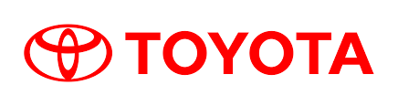
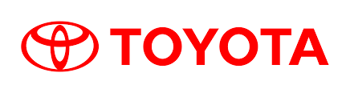

About Line Seiki Asia Pacific
We are dedicated to providing precision measurement solutions and innovative technologies that help industries thrive. With decades of expertise, we stand as a trusted partner in measurement, monitoring, and engineering services.


 
